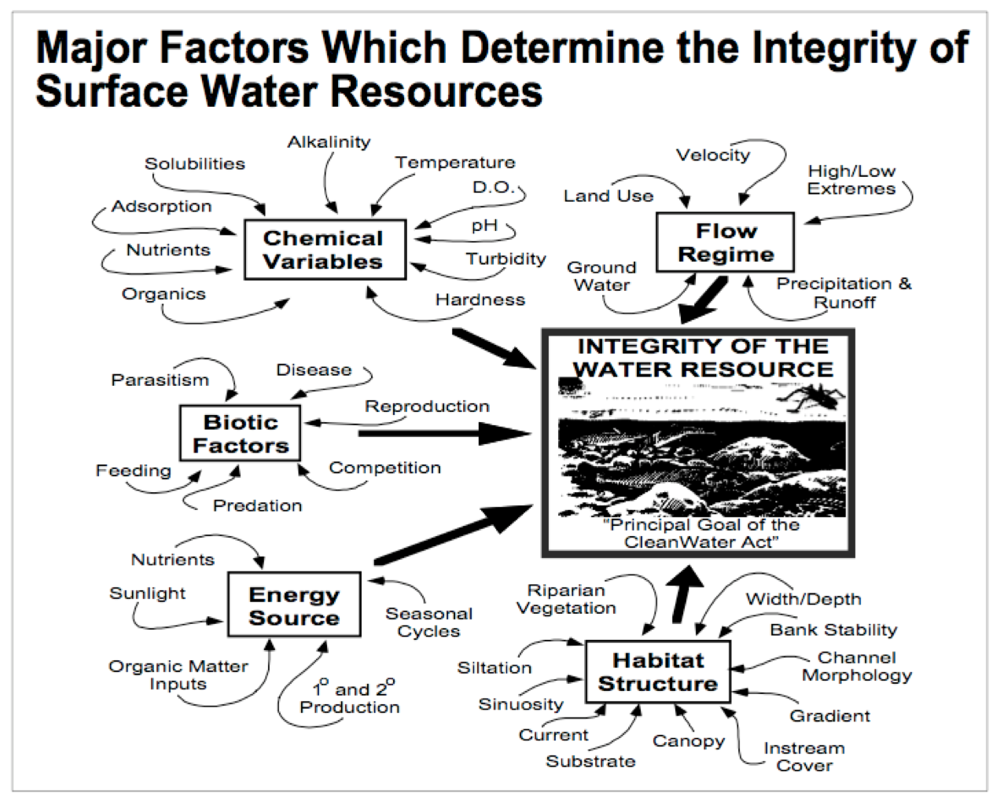

2 Intro to Stream Ecology (Week 9)
2.1 Stream ecology
Limnology is the study of inland waterways. When waterways are characterized by flowing water, such as streams, rivers, or estuaries, we refer to them as lotic ecosystems.

Figure 2.1: Several abiotic and biotic factors impact the ecology of lotic ecosystems. A complete listing of these factors is available in Table 1 on page 30 of your lab manual.
Stream stressors: impervious surfaces
Stream stressors: flow alteration
Stream restoration in Baltimore County
2.2 Discussion questions
- In Northern Virginia, rapid development has led to increased run-off and subsequent stream erosion. According to the video about Baltimore County stream restoration, what are two methods that are used to restore streams in developed areas?